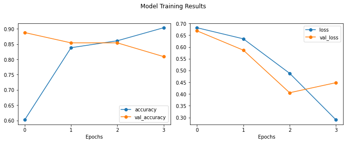
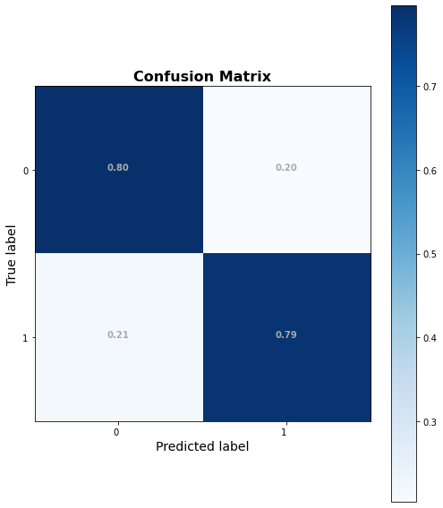
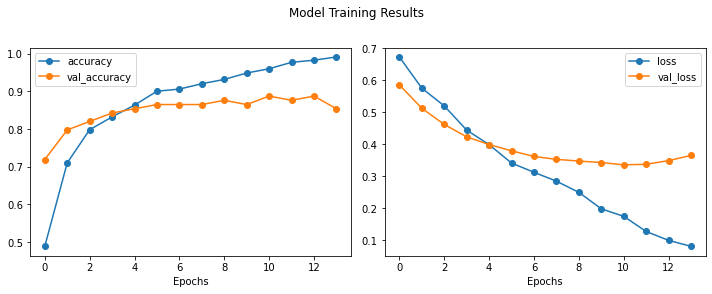
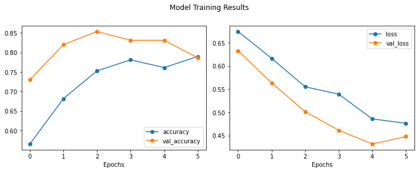
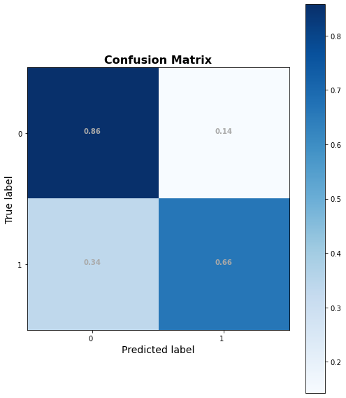
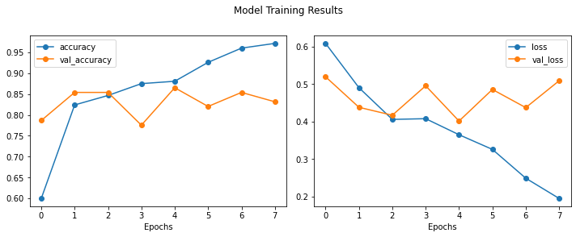
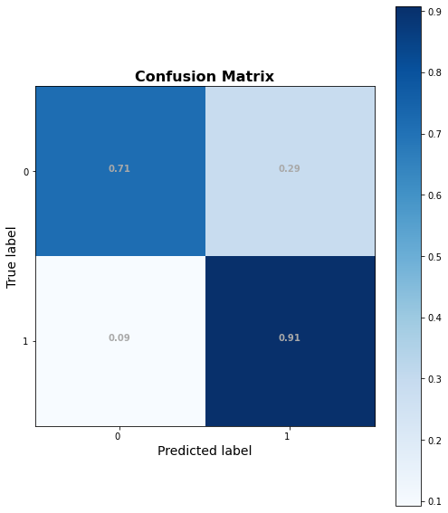
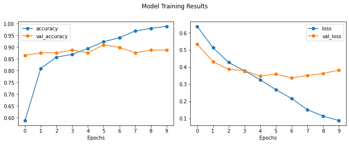
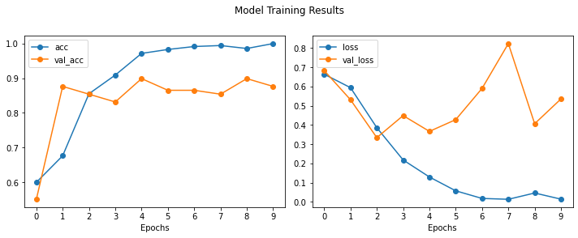

NOTE: You are not allowed to use any propriety functions from this notebook in your projects.#
Capstone Office Hours - Deep NLP#
01/06/21
online-ds-ft-081720
Learning Objectives#
Discuss word Embeddings and their advantages
Training Word2Vec models
Using pretrained word embeddings
Create a Classification Model for true-trump (“Twitter for Android”) vs trump-staffer(“Twitter for iPhone - from period of time when android was still in use)
Use lesson’s W2Vec class in Sci-kit learn models
Use LSTMs
Use RNN/GRUs
Compare:
Mean embeddings vs count/tfidf data with scikit learn.
NLP & Word Vectorization#
Natural Language Processing, or NLP, is the study of how computers can interact with humans through the use of human language. Although this is a field that is quite important to Data Scientists, it does not belong to Data Science alone. NLP has been around for quite a while, and sits at the intersection of Computer Science, Artificial Intelligence, Linguistics, and Information Theory.
Word Embeddings#

Convert words into a vector space
Mathematical object
It’s all about closeness
Distributional Hypothesis: https://en.wikipedia.org/wiki/Distributional_semantics#Distributional_hypothesis

Resources#
Kaggle Tutorial: https://www.kaggle.com/learn/embeddings
Google Embedding Crash Course: https://developers.google.com/machine-learning/crash-course/embeddings
Word2Vec#

Skip-Gram Model#
Train the MLP to find the best weights (context) to map word-to-word
But since words close to another usually contain context, we’re really teaching it context in those weights
Gut check: similar contexted words can be exchanged
EX: “A fluffy dog is a great pet” <–> “A fluffy cat is a great pet”
By training a text-generation model, we wind up with a lookup table where each word has its own vector


GloVe - Global Vectors for Word Representation#
Transfer Learning#
Usually embeddings are hundreds of dimensions
Just use the word embeddings already learned from before!
Unless very specific terminology, context will likely carry within language
Comparable to CNN transfer learning
Sequence Models - Recurrent Neural Networks#


LSTMs & GRUs#
GRU (Gated Recurrent Units (GRUs)
Reset Gate
Update Gate
LSTM (Long Short Term Memory Cells)
Input Gate
Forget Gate
Output Gate

Each word will have a vector of contexts: the embeddings!
Activity: Creating Word Embeddings with Trump’s Tweets#
from tensorflow.random import set_seed
set_seed(321)
import numpy as np
np.random.seed(321)
# !pip install -U fsds
from fsds.imports import *
df = fs.datasets.load_nlp_finding_trump(read_csv_kwds={'parse_dates':['created_at'],
'index_col':'created_at'})
df.sort_index(inplace=True)
df
| source | text | retweet_count | favorite_count | is_retweet | id_str | |
|---|---|---|---|---|---|---|
| created_at | ||||||
| 2016-12-01 14:37:57 | Twitter for iPhone | My thoughts and prayers are with those affecte... | 12077 | 65724 | False | 804333718999539712 |
| 2016-12-01 14:38:09 | Twitter for Android | Getting ready to leave for the Great State of ... | 9834 | 57249 | False | 804333771021570048 |
| 2016-12-01 22:52:10 | Twitter for iPhone | Heading to U.S. Bank Arena in Cincinnati Ohio ... | 5564 | 31256 | False | 804458095569158144 |
| 2016-12-02 02:45:18 | Twitter for iPhone | Thank you Ohio! Together we made history – and... | 17283 | 72196 | False | 804516764562374656 |
| 2016-12-03 00:44:20 | Twitter for Android | The President of Taiwan CALLED ME today to wis... | 24700 | 111106 | False | 804848711599882240 |
| ... | ... | ... | ... | ... | ... | ... |
| 2020-01-01 01:17:43 | Twitter for iPhone | RT @SenJohnKennedy: I think Speaker Pelosi is ... | 8893 | 0 | True | 1212181071988703232 |
| 2020-01-01 01:18:47 | Twitter for iPhone | RT @DanScavino: https://t.co/CJRPySkF1Z | 10796 | 0 | True | 1212181341078458369 |
| 2020-01-01 01:22:28 | Twitter for iPhone | Our fantastic First Lady! https://t.co/6iswto4WDI | 27567 | 132633 | False | 1212182267113680896 |
| 2020-01-01 01:30:35 | Twitter for iPhone | HAPPY NEW YEAR! | 85409 | 576045 | False | 1212184310389850119 |
| 2020-01-01 03:12:07 | Twitter Media Studio | https://t.co/EVAEYD1AgV | 25016 | 108830 | False | 1212209862094012416 |
14066 rows × 6 columns
Text Classification - Finding Trump#
## Getting time period with android tweets
droid_ts = df[df['source'] == 'Twitter for Android'].index
find_trump = df.loc[droid_ts[0]:droid_ts[-1]].copy()
## Getting only original-text (not retweets)
find_trump = find_trump[find_trump['is_retweet']==False]
find_trump
| source | text | retweet_count | favorite_count | is_retweet | id_str | |
|---|---|---|---|---|---|---|
| created_at | ||||||
| 2016-12-01 14:38:09 | Twitter for Android | Getting ready to leave for the Great State of ... | 9834 | 57249 | False | 804333771021570048 |
| 2016-12-01 22:52:10 | Twitter for iPhone | Heading to U.S. Bank Arena in Cincinnati Ohio ... | 5564 | 31256 | False | 804458095569158144 |
| 2016-12-02 02:45:18 | Twitter for iPhone | Thank you Ohio! Together we made history – and... | 17283 | 72196 | False | 804516764562374656 |
| 2016-12-03 00:44:20 | Twitter for Android | The President of Taiwan CALLED ME today to wis... | 24700 | 111106 | False | 804848711599882240 |
| 2016-12-03 01:41:30 | Twitter for Android | Interesting how the U.S. sells Taiwan billions... | 38805 | 122905 | False | 804863098138005504 |
| ... | ... | ... | ... | ... | ... | ... |
| 2017-03-24 17:03:46 | Twitter for iPhone | Today I was pleased to announce the official a... | 12933 | 66692 | False | 845320243614547968 |
| 2017-03-24 17:59:42 | Twitter for iPhone | Today I was thrilled to announce a commitment ... | 20212 | 89339 | False | 845334323045765121 |
| 2017-03-25 13:29:17 | Twitter for iPhone | Happy #MedalOfHonorDay to our heroes! ➡️https:... | 14139 | 68302 | False | 845628655493677056 |
| 2017-03-25 14:37:52 | Twitter for Android | ObamaCare will explode and we will all get tog... | 22518 | 104321 | False | 845645916732358656 |
| 2017-03-25 14:41:14 | Twitter for Android | Watch @JudgeJeanine on @FoxNews tonight at 9:0... | 10116 | 51247 | False | 845646761704243200 |
588 rows × 6 columns
def is_trump(x):
return 'Trump' if x =='Twitter for Android' else 'Not Trump'
find_trump['is_trump'] = find_trump['source'].map(is_trump)
find_trump['is_trump'].value_counts(dropna=False,normalize=True)
Trump 0.619048
Not Trump 0.380952
Name: is_trump, dtype: float64
target_map = {'Not Trump':0,'Trump':1}
find_trump['target'] = find_trump['is_trump'].map(target_map)
find_trump
| source | text | retweet_count | favorite_count | is_retweet | id_str | is_trump | target | |
|---|---|---|---|---|---|---|---|---|
| created_at | ||||||||
| 2016-12-01 14:38:09 | Twitter for Android | Getting ready to leave for the Great State of ... | 9834 | 57249 | False | 804333771021570048 | Trump | 1 |
| 2016-12-01 22:52:10 | Twitter for iPhone | Heading to U.S. Bank Arena in Cincinnati Ohio ... | 5564 | 31256 | False | 804458095569158144 | Not Trump | 0 |
| 2016-12-02 02:45:18 | Twitter for iPhone | Thank you Ohio! Together we made history – and... | 17283 | 72196 | False | 804516764562374656 | Not Trump | 0 |
| 2016-12-03 00:44:20 | Twitter for Android | The President of Taiwan CALLED ME today to wis... | 24700 | 111106 | False | 804848711599882240 | Trump | 1 |
| 2016-12-03 01:41:30 | Twitter for Android | Interesting how the U.S. sells Taiwan billions... | 38805 | 122905 | False | 804863098138005504 | Trump | 1 |
| ... | ... | ... | ... | ... | ... | ... | ... | ... |
| 2017-03-24 17:03:46 | Twitter for iPhone | Today I was pleased to announce the official a... | 12933 | 66692 | False | 845320243614547968 | Not Trump | 0 |
| 2017-03-24 17:59:42 | Twitter for iPhone | Today I was thrilled to announce a commitment ... | 20212 | 89339 | False | 845334323045765121 | Not Trump | 0 |
| 2017-03-25 13:29:17 | Twitter for iPhone | Happy #MedalOfHonorDay to our heroes! ➡️https:... | 14139 | 68302 | False | 845628655493677056 | Not Trump | 0 |
| 2017-03-25 14:37:52 | Twitter for Android | ObamaCare will explode and we will all get tog... | 22518 | 104321 | False | 845645916732358656 | Trump | 1 |
| 2017-03-25 14:41:14 | Twitter for Android | Watch @JudgeJeanine on @FoxNews tonight at 9:0... | 10116 | 51247 | False | 845646761704243200 | Trump | 1 |
588 rows × 8 columns
# df = find_trump[['text','is_trump','target']]
# df
Training Word2Vec#
Resources:#
Two Part Word2Vec Tutorial (linked from Learn)
sentences: dataset to train onsize: how big of a word vector do we wantwindow: how many words around the target word to train withmin_count: how many times the word shows up in corpus; we don’t want words that are rarely usedworkers: number of threads (individual task “workers”)
from gensim.models import Word2Vec
# Let's assume we have our text corpus already tokenized and stored inside the variable 'data'--the regular text preprocessing steps still need to be handled before training a Word2Vec model!
model = Word2Vec(data, size=100, window=5, min_count=1, workers=4)
model.train(data, total_examples=model.corpus_count)
from nltk import word_tokenize, TweetTokenizer
from gensim.utils import simple_preprocess
from gensim.models import Word2Vec
## TRAINING WORD2VEC FROM FULL DF NOT JUST TARGETS
data_lower = df['text'].map(lambda x: simple_preprocess(x.lower(),deacc=True,
max_len=100))
print(df.iloc[0]['text'])
data_lower[0]
My thoughts and prayers are with those affected by the tragic storms and tornadoes in the Southeastern United States. Stay safe!
['my',
'thoughts',
'and',
'prayers',
'are',
'with',
'those',
'affected',
'by',
'the',
'tragic',
'storms',
'and',
'tornadoes',
'in',
'the',
'southeastern',
'united',
'states',
'stay',
'safe']
wv_model = Word2Vec(data_lower,size=100,window=5,min_count=3)#,workers=4)
wv_model
<gensim.models.word2vec.Word2Vec at 0x7f9111c79978>
wv_model.train(data_lower, total_examples=wv_model.corpus_count,epochs=50)
(13572394, 18326300)
## get the keyed vector
wv = wv_model.wv
wv
<gensim.models.keyedvectors.Word2VecKeyedVectors at 0x7f9111c79860>
wv['republican']
array([-1.5186056 , 1.0432038 , -1.6248196 , -0.5963794 , -0.10912094,
-1.3959168 , -0.93438447, -3.0586472 , 2.0369518 , 2.6508603 ,
-2.921037 , 5.8698673 , 2.4998512 , -1.8337091 , 1.7159714 ,
-2.8394873 , -2.333745 , -0.28990367, -1.2357205 , 1.0747035 ,
0.5875254 , 1.6362019 , 1.0450835 , 1.0055666 , -0.791718 ,
2.6869712 , -0.23812768, 0.5108571 , -5.9973717 , 0.52950597,
-0.6922795 , -3.684372 , 3.6396863 , -1.7488122 , -1.5429022 ,
-2.3110943 , -3.0220711 , 0.43749195, 1.0387117 , -2.7570548 ,
-1.5130683 , -1.8573967 , 1.695199 , 0.7008838 , 2.2193706 ,
-1.2039363 , 1.9542902 , 0.49366587, -0.7920619 , -4.291762 ,
0.2714777 , -4.622125 , -0.7964699 , -0.6809695 , 2.1424189 ,
-0.7049987 , -4.1210747 , -1.6962391 , 1.3691208 , -1.7295369 ,
-3.3603652 , 1.8647096 , -0.4581001 , 1.6188774 , -2.6719227 ,
1.9066263 , 0.43146926, 0.7329808 , 3.2083356 , 2.6233766 ,
-3.5650828 , -0.4822399 , 2.0569708 , 0.42371047, -5.334321 ,
-0.7933879 , 2.384581 , -1.5274073 , -3.0359254 , 1.846948 ,
-1.8304332 , 1.1399287 , -2.2938986 , -3.4642084 , 0.94907314,
-0.9335882 , -0.247443 , 1.9710171 , -0.64955586, -1.8353418 ,
-2.5913339 , 2.5678918 , -1.8322248 , -2.8613002 , -1.6828859 ,
0.62005955, 0.19599642, -1.7643598 , 0.1466509 , 1.1234872 ],
dtype=float32)
len(wv.vocab)
7089
## Cosine Similarity
wv.most_similar('republican')
[('democrat', 0.4990944266319275),
('democratic', 0.49159175157546997),
('republicans', 0.4493952989578247),
('opposition', 0.4251896142959595),
('quitting', 0.37795478105545044),
('opposing', 0.35771575570106506),
('petrified', 0.33704280853271484),
('lame', 0.318926066160202),
('asset', 0.31869572401046753),
('congressmen', 0.3181626796722412)]
wv.most_similar(negative=['democrats'])
[('delivers', 0.414692223072052),
('economist', 0.4114968180656433),
('azar', 0.3969866931438446),
('alex', 0.3676407039165497),
('covering', 0.3628000020980835),
('greet', 0.3527188003063202),
('triumph', 0.3505815863609314),
('iagovernor', 0.34022000432014465),
('scavino', 0.33930230140686035),
('met', 0.33459001779556274)]
## Pos words. neg words
options = [ (['cheat'], []),
(['election'],['cheat']),
(['election'],['fraud'])]
for eqn in options:
print(f"Pos words= {eqn[0]}\tNeg words= {eqn[1]}")
Pos words= ['cheat'] Neg words= []
Pos words= ['election'] Neg words= ['cheat']
Pos words= ['election'] Neg words= ['fraud']
options = [ (['cheat'], []),
(['election'],['cheat']),
(['election'],['fraud'])]
for (pos,neg) in options:
print(f"Pos words= {pos}\t\tNeg words= {neg}")
results = wv.most_similar(positive=pos,negative=neg)
[print(word) for word in results]
print()
Pos words= ['cheat'] Neg words= []
('columbia', 0.37462949752807617)
('behavior', 0.37049365043640137)
('nbc', 0.35910871624946594)
('anna', 0.3583730161190033)
('ballot', 0.35584402084350586)
('then', 0.3556467890739441)
('griffin', 0.3508838415145874)
('expense', 0.3493574261665344)
('everybody', 0.3451763391494751)
('term', 0.33988821506500244)
Pos words= ['election'] Neg words= ['cheat']
('humiliating', 0.3256770372390747)
('example', 0.3233208656311035)
('inaugurated', 0.31980100274086)
('points', 0.3133443593978882)
('gopchairwoman', 0.3092685639858246)
('figured', 0.3078387975692749)
('confidence', 0.30351686477661133)
('touch', 0.2925059199333191)
('washtimes', 0.2837539315223694)
('decade', 0.27932703495025635)
Pos words= ['election'] Neg words= ['fraud']
('washington', 0.36493197083473206)
('office', 0.3504166603088379)
('elections', 0.318131685256958)
('you', 0.28754714131355286)
('elect', 0.2865354120731354)
('market', 0.28572016954421997)
('paris', 0.28151121735572815)
('necessary', 0.28064805269241333)
('deterrent', 0.2785939574241638)
('america', 0.2752317786216736)
wv.most_similar(positive=[],negative=[])
Word2Vec params#
## For initializing model
sentences=None,
size=100,
alpha=0.025,
window=5,
min_count=5,
max_vocab_size=None,
sample=0.001,
seed=1,
workers=3,
min_alpha=0.0001,
sg=0,
hs=0,
negative=5,
cbow_mean=1,
hashfxn=<built-in function hash>,
iter=5,
null_word=0,
trim_rule=None,
sorted_vocab=1,
batch_words=10000,
compute_loss=False,
callbacks=(),
## For training
sentences,
total_examples=None,
total_words=None,
epochs=None,
start_alpha=None,
end_alpha=None,
word_count=0,
queue_factor=2,
report_delay=1.0,
compute_loss=False,
callbacks=(),
```
# ### USING WORD VECTOR MATH TO GET A FEEL FOR QUALITY OF MODE
def word_math(wv,pos_words=['hillary'],neg_words=['bill'],
verbose=True,return_vec=False):
if isinstance(pos_words,str):
pos_words=[pos_words]
if isinstance(neg_words,str):
neg_words=[neg_words]
pos_eqn = '+'.join(pos_words)
neg_eqn = '-'.join(neg_words)
print('---'*15)
print(f"[i] Result for:\t{pos_eqn}{' - '+neg_eqn if len(neg_eqn)>0 else ' '}")
print('---'*15)
answer = wv.most_similar(positive=pos_words,negative=neg_words)
if verbose:
[print(f"- {ans[0]} ({round(ans[1],3)})") for ans in answer]
print('---'*15,'\n\n')
if return_vec:
return answer
## [Positive], [negatigve words]
equation_list=[(['america','crime'],[]),
(['democrats','russia'],[]),
(['republican'],['honor']),
(['man','power'],[]),
(['russia','honor'],[]),
(['china','tariff'])]
for eqn in equation_list:
# print('\n\n')
word_math(wv,*eqn)
# word_math(wv2,*eqn)
---------------------------------------------
[i] Result for: america+crime
---------------------------------------------
- borders (0.457)
- criminals (0.365)
- taxes (0.36)
- your (0.357)
- ineffective (0.331)
- california (0.326)
- amendment (0.322)
- our (0.317)
- november (0.316)
- sanctuary (0.312)
---------------------------------------------
---------------------------------------------
[i] Result for: democrats+russia
---------------------------------------------
- dems (0.648)
- they (0.551)
- russian (0.495)
- facts (0.392)
- russians (0.38)
- doj (0.373)
- obstruction (0.371)
- mueller (0.366)
- hoax (0.348)
- dem (0.347)
---------------------------------------------
---------------------------------------------
[i] Result for: republican - honor
---------------------------------------------
- republicans (0.472)
- democrat (0.412)
- socialists (0.387)
- switch (0.374)
- obstruct (0.374)
- dem (0.374)
- democratic (0.366)
- extreme (0.358)
- weak (0.324)
- liberal (0.318)
---------------------------------------------
---------------------------------------------
[i] Result for: man+power
---------------------------------------------
- impeccable (0.454)
- person (0.433)
- guy (0.421)
- gentleman (0.413)
- leader (0.397)
- hack (0.363)
- talents (0.358)
- rourke (0.356)
- loser (0.352)
- fighter (0.348)
---------------------------------------------
---------------------------------------------
[i] Result for: russia+honor
---------------------------------------------
- campaign (0.374)
- relationship (0.365)
- privilege (0.363)
- invite (0.356)
- russians (0.355)
- war (0.349)
- spied (0.347)
- behalf (0.344)
- pleasure (0.34)
- writer (0.333)
---------------------------------------------
---------------------------------------------
[i] Result for: china - tariff
---------------------------------------------
- putin (0.442)
- france (0.372)
- tower (0.348)
- timeless (0.337)
- recession (0.335)
- kim (0.324)
- impressed (0.319)
- direction (0.315)
- joe (0.311)
- nasa (0.307)
---------------------------------------------
Using Embeddings in Classification#
Embedding Layers#
You should make note of a couple caveats that come with using embedding layers in your neural network – namely:
The embedding layer must always be the first layer of the network, meaning that it should immediately follow the
Input()layerAll words in the text should be integer-encoded, with each unique word encoded as it’s own unique integer
The size of the embedding layer must always be greater than the total vocabulary size of the dataset! The first parameter denotes the vocabulary size, while the second denotes the size of the actual word vectors
The size of the sequences passed in as data must be set when creating the layer (all data will be converted to padded sequences of the same size during the preprocessing step)
References to Try#
Using Embedding Layers in ANN#
## IMPORTING PYTHON FILE
import os,sys
sys.path.append("../")
import keras_gridsearch as kg
## Auto-reload mpdule
%load_ext autoreload
%autoreload 2
The autoreload extension is already loaded. To reload it, use:
%reload_ext autoreload
from tensorflow.keras.layers import Input, Dense, LSTM, Embedding
from tensorflow.keras.layers import Dropout, Activation, Bidirectional, GlobalMaxPool1D
from tensorflow.keras.models import Sequential
from tensorflow.keras import initializers, regularizers, constraints, optimizers, layers
from tensorflow.keras.callbacks import EarlyStopping,ModelCheckpoint
from tensorflow.keras.preprocessing import text, sequence
from tensorflow.keras.utils import to_categorical
# from keras.preprocessing.sequence import pad_sequences
## Now only using find_trump tweets
df = find_trump[['text','is_trump','target']]
df
| text | is_trump | target | |
|---|---|---|---|
| created_at | |||
| 2016-12-01 14:38:09 | Getting ready to leave for the Great State of ... | Trump | 1 |
| 2016-12-01 22:52:10 | Heading to U.S. Bank Arena in Cincinnati Ohio ... | Not Trump | 0 |
| 2016-12-02 02:45:18 | Thank you Ohio! Together we made history – and... | Not Trump | 0 |
| 2016-12-03 00:44:20 | The President of Taiwan CALLED ME today to wis... | Trump | 1 |
| 2016-12-03 01:41:30 | Interesting how the U.S. sells Taiwan billions... | Trump | 1 |
| ... | ... | ... | ... |
| 2017-03-24 17:03:46 | Today I was pleased to announce the official a... | Not Trump | 0 |
| 2017-03-24 17:59:42 | Today I was thrilled to announce a commitment ... | Not Trump | 0 |
| 2017-03-25 13:29:17 | Happy #MedalOfHonorDay to our heroes! ➡️https:... | Not Trump | 0 |
| 2017-03-25 14:37:52 | ObamaCare will explode and we will all get tog... | Trump | 1 |
| 2017-03-25 14:41:14 | Watch @JudgeJeanine on @FoxNews tonight at 9:0... | Trump | 1 |
588 rows × 3 columns
from keras.preprocessing import text,sequence
from sklearn.model_selection import train_test_split
from nltk import word_tokenize
from gensim.utils import simple_preprocess
from sklearn import metrics
X = df['text']
y = df['target']
y
created_at
2016-12-01 14:38:09 1
2016-12-01 22:52:10 0
2016-12-02 02:45:18 0
2016-12-03 00:44:20 1
2016-12-03 01:41:30 1
..
2017-03-24 17:03:46 0
2017-03-24 17:59:42 0
2017-03-25 13:29:17 0
2017-03-25 14:37:52 1
2017-03-25 14:41:14 1
Name: target, Length: 588, dtype: int64
X_train, X_test, y_train, y_test = train_test_split(X,y,random_state=123)
X_train.shape,y_test.shape
# pd.Series(y_test).value_counts(normalize=True)
y_test.shape
X_test
created_at
2017-01-20 12:31:53 It all begins today! I will see you at 11:00 A...
2016-12-12 13:21:20 Unless you catch "hackers" in the act it is ve...
2017-03-25 14:41:14 Watch @JudgeJeanine on @FoxNews tonight at 9:0...
2017-01-09 11:36:02 Hillary flunky who lost big. For the 100th tim...
2017-02-04 23:37:59 Why aren't the lawyers looking at and using th...
...
2017-01-15 20:04:38 Thank you to Bob Woodward who said "That is a ...
2016-12-13 12:44:06 The thing I like best about Rex Tillerson is t...
2017-01-07 03:53:38 Gross negligence by the Democratic National Co...
2017-01-04 13:19:09 Thank you to Ford for scrapping a new plant in...
2017-01-07 15:10:46 have enough problems around the world without ...
Name: text, Length: 147, dtype: object
Computer Class Weights#
## Class imbalance
y_train.value_counts(1)
1 0.603175
0 0.396825
Name: target, dtype: float64
from sklearn.utils.class_weight import compute_class_weight
weights= compute_class_weight(
'balanced',
np.unique(y_train),
y_train)
weights_dict = dict(zip( np.unique(y_train),weights))
weights_dict
/opt/anaconda3/envs/learn-env/lib/python3.6/site-packages/sklearn/utils/validation.py:70: FutureWarning:
Pass classes=[0 1], y=created_at
2016-12-12 13:26:13 1
2017-03-10 15:40:53 0
2017-01-06 12:05:01 1
2017-03-05 11:40:20 1
2017-02-20 14:15:42 1
..
2016-12-22 16:50:30 1
2017-01-29 23:28:50 0
2017-02-08 15:23:29 0
2017-02-05 20:42:33 1
2017-03-04 13:19:29 1
Name: target, Length: 441, dtype: int64 as keyword args. From version 0.25 passing these as positional arguments will result in an error
{0: 1.26, 1: 0.8289473684210527}
## Make OHE y vars
y_train_seq = to_categorical(y_train)
y_test_seq = to_categorical(y_test)
y_train_seq#.shape
array([[0., 1.],
[1., 0.],
[0., 1.],
[0., 1.],
[0., 1.],
[0., 1.],
[1., 0.],
[1., 0.],
[1., 0.],
[1., 0.],
[1., 0.],
[0., 1.],
[0., 1.],
[1., 0.],
[0., 1.],
[0., 1.],
[1., 0.],
[0., 1.],
[0., 1.],
[1., 0.],
[0., 1.],
[0., 1.],
[0., 1.],
[1., 0.],
[0., 1.],
[0., 1.],
[0., 1.],
[0., 1.],
[1., 0.],
[1., 0.],
[1., 0.],
[0., 1.],
[0., 1.],
[0., 1.],
[1., 0.],
[0., 1.],
[1., 0.],
[0., 1.],
[1., 0.],
[0., 1.],
[0., 1.],
[0., 1.],
[1., 0.],
[0., 1.],
[0., 1.],
[1., 0.],
[0., 1.],
[0., 1.],
[1., 0.],
[0., 1.],
[1., 0.],
[1., 0.],
[0., 1.],
[0., 1.],
[0., 1.],
[1., 0.],
[0., 1.],
[0., 1.],
[0., 1.],
[0., 1.],
[1., 0.],
[1., 0.],
[1., 0.],
[1., 0.],
[0., 1.],
[0., 1.],
[0., 1.],
[0., 1.],
[0., 1.],
[1., 0.],
[0., 1.],
[1., 0.],
[1., 0.],
[0., 1.],
[0., 1.],
[1., 0.],
[0., 1.],
[0., 1.],
[0., 1.],
[0., 1.],
[0., 1.],
[0., 1.],
[0., 1.],
[1., 0.],
[0., 1.],
[1., 0.],
[1., 0.],
[1., 0.],
[1., 0.],
[0., 1.],
[0., 1.],
[1., 0.],
[1., 0.],
[0., 1.],
[1., 0.],
[0., 1.],
[0., 1.],
[1., 0.],
[0., 1.],
[1., 0.],
[0., 1.],
[0., 1.],
[0., 1.],
[0., 1.],
[0., 1.],
[0., 1.],
[0., 1.],
[0., 1.],
[1., 0.],
[0., 1.],
[1., 0.],
[0., 1.],
[0., 1.],
[0., 1.],
[0., 1.],
[1., 0.],
[1., 0.],
[0., 1.],
[0., 1.],
[1., 0.],
[0., 1.],
[1., 0.],
[0., 1.],
[0., 1.],
[0., 1.],
[0., 1.],
[1., 0.],
[1., 0.],
[0., 1.],
[0., 1.],
[0., 1.],
[1., 0.],
[1., 0.],
[0., 1.],
[1., 0.],
[0., 1.],
[0., 1.],
[1., 0.],
[0., 1.],
[1., 0.],
[0., 1.],
[0., 1.],
[0., 1.],
[1., 0.],
[1., 0.],
[1., 0.],
[0., 1.],
[1., 0.],
[0., 1.],
[1., 0.],
[0., 1.],
[0., 1.],
[1., 0.],
[0., 1.],
[1., 0.],
[0., 1.],
[0., 1.],
[0., 1.],
[1., 0.],
[1., 0.],
[0., 1.],
[0., 1.],
[0., 1.],
[0., 1.],
[1., 0.],
[0., 1.],
[1., 0.],
[1., 0.],
[1., 0.],
[0., 1.],
[0., 1.],
[0., 1.],
[0., 1.],
[0., 1.],
[0., 1.],
[0., 1.],
[0., 1.],
[1., 0.],
[1., 0.],
[0., 1.],
[1., 0.],
[0., 1.],
[0., 1.],
[0., 1.],
[0., 1.],
[0., 1.],
[0., 1.],
[1., 0.],
[0., 1.],
[0., 1.],
[0., 1.],
[0., 1.],
[1., 0.],
[0., 1.],
[1., 0.],
[0., 1.],
[0., 1.],
[0., 1.],
[1., 0.],
[0., 1.],
[0., 1.],
[0., 1.],
[1., 0.],
[0., 1.],
[0., 1.],
[1., 0.],
[0., 1.],
[1., 0.],
[0., 1.],
[0., 1.],
[1., 0.],
[1., 0.],
[0., 1.],
[0., 1.],
[0., 1.],
[1., 0.],
[1., 0.],
[1., 0.],
[1., 0.],
[0., 1.],
[1., 0.],
[1., 0.],
[1., 0.],
[0., 1.],
[0., 1.],
[0., 1.],
[0., 1.],
[0., 1.],
[0., 1.],
[0., 1.],
[1., 0.],
[1., 0.],
[0., 1.],
[0., 1.],
[1., 0.],
[0., 1.],
[0., 1.],
[0., 1.],
[0., 1.],
[0., 1.],
[0., 1.],
[0., 1.],
[0., 1.],
[1., 0.],
[0., 1.],
[0., 1.],
[0., 1.],
[0., 1.],
[0., 1.],
[0., 1.],
[1., 0.],
[0., 1.],
[1., 0.],
[0., 1.],
[0., 1.],
[0., 1.],
[1., 0.],
[1., 0.],
[1., 0.],
[0., 1.],
[1., 0.],
[0., 1.],
[0., 1.],
[1., 0.],
[1., 0.],
[0., 1.],
[1., 0.],
[1., 0.],
[1., 0.],
[1., 0.],
[1., 0.],
[0., 1.],
[0., 1.],
[1., 0.],
[0., 1.],
[0., 1.],
[1., 0.],
[1., 0.],
[0., 1.],
[0., 1.],
[0., 1.],
[0., 1.],
[0., 1.],
[0., 1.],
[0., 1.],
[0., 1.],
[1., 0.],
[1., 0.],
[1., 0.],
[0., 1.],
[1., 0.],
[0., 1.],
[1., 0.],
[0., 1.],
[1., 0.],
[1., 0.],
[1., 0.],
[0., 1.],
[1., 0.],
[1., 0.],
[0., 1.],
[1., 0.],
[0., 1.],
[0., 1.],
[1., 0.],
[0., 1.],
[0., 1.],
[1., 0.],
[1., 0.],
[0., 1.],
[0., 1.],
[0., 1.],
[0., 1.],
[0., 1.],
[1., 0.],
[1., 0.],
[1., 0.],
[0., 1.],
[1., 0.],
[0., 1.],
[1., 0.],
[0., 1.],
[0., 1.],
[0., 1.],
[0., 1.],
[0., 1.],
[0., 1.],
[0., 1.],
[0., 1.],
[0., 1.],
[0., 1.],
[1., 0.],
[0., 1.],
[1., 0.],
[1., 0.],
[1., 0.],
[0., 1.],
[1., 0.],
[1., 0.],
[1., 0.],
[0., 1.],
[1., 0.],
[0., 1.],
[0., 1.],
[0., 1.],
[1., 0.],
[0., 1.],
[1., 0.],
[0., 1.],
[0., 1.],
[1., 0.],
[0., 1.],
[0., 1.],
[0., 1.],
[1., 0.],
[1., 0.],
[0., 1.],
[0., 1.],
[1., 0.],
[1., 0.],
[0., 1.],
[0., 1.],
[0., 1.],
[1., 0.],
[1., 0.],
[1., 0.],
[0., 1.],
[1., 0.],
[0., 1.],
[0., 1.],
[0., 1.],
[0., 1.],
[0., 1.],
[1., 0.],
[1., 0.],
[0., 1.],
[1., 0.],
[1., 0.],
[0., 1.],
[1., 0.],
[0., 1.],
[0., 1.],
[1., 0.],
[0., 1.],
[0., 1.],
[1., 0.],
[0., 1.],
[1., 0.],
[1., 0.],
[1., 0.],
[0., 1.],
[0., 1.],
[0., 1.],
[1., 0.],
[0., 1.],
[1., 0.],
[1., 0.],
[1., 0.],
[1., 0.],
[0., 1.],
[1., 0.],
[1., 0.],
[0., 1.],
[0., 1.],
[0., 1.],
[0., 1.],
[0., 1.],
[0., 1.],
[0., 1.],
[0., 1.],
[1., 0.],
[0., 1.],
[1., 0.],
[1., 0.],
[1., 0.],
[0., 1.],
[1., 0.],
[0., 1.],
[0., 1.],
[0., 1.],
[1., 0.],
[1., 0.],
[0., 1.],
[0., 1.],
[1., 0.],
[0., 1.],
[1., 0.],
[1., 0.],
[0., 1.],
[0., 1.],
[1., 0.],
[0., 1.],
[1., 0.],
[1., 0.],
[0., 1.],
[0., 1.],
[0., 1.],
[1., 0.],
[1., 0.],
[0., 1.],
[0., 1.]], dtype=float32)
## TOKENIZE TEXT
MAX_WORDS = 25000
# MAX_SEQUENCE_LENGTH = 40
tokenizer = text.Tokenizer(num_words=MAX_WORDS)
tokenizer.fit_on_texts(X_train) #df['text'])
train_sequences = tokenizer.texts_to_sequences(X_train)
test_sequences = tokenizer.texts_to_sequences(X_test)#df['text'])
## Find the longest sequence
seq_lenghts = list(map(lambda x: len(x),[*train_sequences,*test_sequences]))
max(seq_lenghts)
31
train_sequences[0]
[1,
417,
418,
419,
3,
258,
10,
44,
4,
320,
589,
4,
321,
99,
3,
12,
13,
936,
17,
322,
3,
223,
590,
76,
194,
224]
## Pad sequences
X_train_seq = sequence.pad_sequences(train_sequences, maxlen=MAX_SEQUENCE_LENGTH)
X_test_seq = sequence.pad_sequences(test_sequences, maxlen=MAX_SEQUENCE_LENGTH)
X_train_seq
array([[ 0, 0, 0, ..., 76, 194, 224],
[ 0, 0, 0, ..., 6, 7, 939],
[ 0, 0, 0, ..., 5, 14, 327],
...,
[ 0, 0, 0, ..., 6, 7, 2296],
[ 0, 0, 0, ..., 191, 32, 878],
[ 0, 0, 0, ..., 2, 14, 327]], dtype=int32)
len(tokenizer.index_word)
2302
X_train_seq[-1]
array([ 0, 0, 0, 0, 0, 0, 0, 0, 0, 0, 0,
0, 0, 0, 0, 0, 0, 2300, 2301, 697, 2302, 506,
1, 446, 50, 33, 887, 28, 143, 75, 843, 228, 30,
28, 42, 334, 475, 2, 14, 327], dtype=int32)
# y_classes = df['target']
# y_classes.value_counts(1)
MAX_WORDS
25000
from tensorflow.keras.callbacks import EarlyStopping
def get_earlystop(monitor='val_loss',patience=5, restore_best_weights=False):
""""""
args = locals()
return EarlyStopping(**args)
get_earlystop.__doc__+=EarlyStopping.__doc__
# get_earlystop
#where codealong get this?
def make_model1(EMBEDDING_SIZE = 128):
model=Sequential()
model.add(Embedding(MAX_WORDS, EMBEDDING_SIZE))
model.add(LSTM(50,return_sequences=False))
# model.add(GlobalMaxPool1D())
# model.add(Dropout(0.5))
model.add(Dense(25, activation='relu'))
model.add(Dropout(0.5))
model.add(Dense(2, activation='softmax'))
model.compile(loss='categorical_crossentropy',#'categorical_crossentropy',
optimizer='adam',
metrics=['accuracy'])
display(model.summary())
return model
model = make_model1()
history = model.fit(X_train_seq, y_train_seq, epochs=50,
batch_size=32, validation_split=0.2,callbacks=get_earlystop(),
class_weight=weights_dict)
Model: "sequential_13"
_________________________________________________________________
Layer (type) Output Shape Param #
=================================================================
embedding_14 (Embedding) (None, None, 128) 3200000
_________________________________________________________________
lstm_13 (LSTM) (None, 50) 35800
_________________________________________________________________
dense_26 (Dense) (None, 25) 1275
_________________________________________________________________
dropout_8 (Dropout) (None, 25) 0
_________________________________________________________________
dense_27 (Dense) (None, 2) 52
=================================================================
Total params: 3,237,127
Trainable params: 3,237,127
Non-trainable params: 0
_________________________________________________________________
None
Epoch 1/50
11/11 [==============================] - 4s 241ms/step - loss: 0.6950 - accuracy: 0.5497 - val_loss: 0.6684 - val_accuracy: 0.8876
Epoch 2/50
11/11 [==============================] - 0s 45ms/step - loss: 0.6550 - accuracy: 0.8271 - val_loss: 0.5863 - val_accuracy: 0.8539
Epoch 3/50
11/11 [==============================] - 1s 51ms/step - loss: 0.5291 - accuracy: 0.8689 - val_loss: 0.4053 - val_accuracy: 0.8539
Epoch 4/50
11/11 [==============================] - 1s 53ms/step - loss: 0.3181 - accuracy: 0.9035 - val_loss: 0.4481 - val_accuracy: 0.8090
y_hat_test = model.predict(X_test_seq).argmax(axis=1)
y_hat_test[:5]
array([1, 1, 0, 1, 0])
y_test_seq.argmax(axis=1)
array([1, 1, 1, 1, 1, 0, 0, 1, 0, 0, 1, 1, 0, 0, 1, 1, 1, 0, 1, 1, 0, 0,
1, 1, 0, 1, 0, 1, 0, 1, 1, 1, 1, 1, 1, 0, 1, 1, 1, 1, 1, 0, 1, 0,
1, 0, 1, 1, 1, 1, 1, 0, 1, 0, 1, 1, 0, 0, 1, 0, 1, 0, 1, 1, 1, 0,
0, 1, 1, 1, 1, 1, 1, 1, 1, 0, 1, 1, 1, 1, 1, 0, 1, 0, 0, 1, 1, 1,
1, 1, 0, 1, 1, 1, 1, 0, 1, 1, 1, 1, 1, 1, 1, 0, 1, 0, 0, 1, 0, 0,
0, 1, 0, 0, 1, 1, 0, 0, 1, 1, 1, 0, 1, 1, 1, 1, 0, 1, 1, 0, 1, 1,
0, 0, 1, 0, 0, 1, 1, 0, 0, 1, 1, 1, 1, 1, 1])
# print(pd.Series(y_hat_test).value_counts())
kg.evaluate_model(y_test_seq,y_hat_test,history)

------------------------------------------------------------
CLASSIFICATION REPORT:
------------------------------------------------------------
precision recall f1-score support
0 0.65 0.80 0.72 49
1 0.89 0.79 0.83 98
accuracy 0.79 147
macro avg 0.77 0.79 0.77 147
weighted avg 0.81 0.79 0.79 147

Using Pre-Trained Vectors#
Using Our Word2Vec in Keras Embedding#
# embedding_layer = Embedding(len(total_vocabulary) + 1,
# EMBEDDING_SIZE,
# weights=[embedding_matrix],
# input_length=MAX_SEQUENCE_LENGTH,
# trainable=True)
wv.get_keras_embedding()
<tensorflow.python.keras.layers.embeddings.Embedding at 0x7f91083a58d0>
#where codealong get this?
def make_model_wv(wv):
model=Sequential()
model.add(wv.get_keras_embedding())#Embedding(MAX_WORDS, EMBEDDING_SIZE))
model.add(LSTM(50,return_sequences=False))
# model.add(GlobalMaxPool1D())
# model.add(Dropout(0.5))
model.add(Dense(25, activation='relu'))
model.add(Dropout(0.5))
model.add(Dense(2, activation='softmax'))
model.compile(loss='categorical_crossentropy',#'categorical_crossentropy',
optimizer='adam',
metrics=['accuracy'])
display(model.summary())
return model
model = make_model_wv(wv)
history = model.fit(X_train_seq, y_train_seq, epochs=50,
batch_size=32, validation_split=0.2,
callbacks=get_earlystop(),
class_weight=weights_dict)
y_hat_test = model.predict(X_test_seq).argmax(axis=1)
kg.evaluate_model(y_test_seq,y_hat_test,history)
Model: "sequential_18"
_________________________________________________________________
Layer (type) Output Shape Param #
=================================================================
embedding_20 (Embedding) (None, None, 100) 708900
_________________________________________________________________
lstm_18 (LSTM) (None, 50) 30200
_________________________________________________________________
dense_36 (Dense) (None, 25) 1275
_________________________________________________________________
dropout_13 (Dropout) (None, 25) 0
_________________________________________________________________
dense_37 (Dense) (None, 2) 52
=================================================================
Total params: 740,427
Trainable params: 31,527
Non-trainable params: 708,900
_________________________________________________________________
None
Epoch 1/50
11/11 [==============================] - 3s 87ms/step - loss: 0.6899 - accuracy: 0.4773 - val_loss: 0.5855 - val_accuracy: 0.7191
Epoch 2/50
11/11 [==============================] - 1s 116ms/step - loss: 0.5954 - accuracy: 0.6855 - val_loss: 0.5125 - val_accuracy: 0.7978
Epoch 3/50
11/11 [==============================] - 0s 21ms/step - loss: 0.5465 - accuracy: 0.7631 - val_loss: 0.4620 - val_accuracy: 0.8202
Epoch 4/50
11/11 [==============================] - 0s 24ms/step - loss: 0.4510 - accuracy: 0.8103 - val_loss: 0.4233 - val_accuracy: 0.8427
Epoch 5/50
11/11 [==============================] - 0s 22ms/step - loss: 0.4174 - accuracy: 0.8593 - val_loss: 0.3993 - val_accuracy: 0.8539
Epoch 6/50
11/11 [==============================] - 0s 21ms/step - loss: 0.3432 - accuracy: 0.9186 - val_loss: 0.3797 - val_accuracy: 0.8652
Epoch 7/50
11/11 [==============================] - 0s 22ms/step - loss: 0.3192 - accuracy: 0.9031 - val_loss: 0.3622 - val_accuracy: 0.8652
Epoch 8/50
11/11 [==============================] - 0s 20ms/step - loss: 0.2922 - accuracy: 0.9264 - val_loss: 0.3531 - val_accuracy: 0.8652
Epoch 9/50
11/11 [==============================] - 0s 21ms/step - loss: 0.2362 - accuracy: 0.9493 - val_loss: 0.3478 - val_accuracy: 0.8764
Epoch 10/50
11/11 [==============================] - 0s 22ms/step - loss: 0.1946 - accuracy: 0.9606 - val_loss: 0.3432 - val_accuracy: 0.8652
Epoch 11/50
11/11 [==============================] - 0s 20ms/step - loss: 0.1881 - accuracy: 0.9539 - val_loss: 0.3361 - val_accuracy: 0.8876
Epoch 12/50
11/11 [==============================] - 0s 20ms/step - loss: 0.1302 - accuracy: 0.9783 - val_loss: 0.3377 - val_accuracy: 0.8764
Epoch 13/50
11/11 [==============================] - 0s 23ms/step - loss: 0.1039 - accuracy: 0.9800 - val_loss: 0.3491 - val_accuracy: 0.8876
Epoch 14/50
11/11 [==============================] - 0s 22ms/step - loss: 0.0779 - accuracy: 0.9928 - val_loss: 0.3654 - val_accuracy: 0.8539

------------------------------------------------------------
CLASSIFICATION REPORT:
------------------------------------------------------------
precision recall f1-score support
0 0.82 0.73 0.77 49
1 0.87 0.92 0.90 98
accuracy 0.86 147
macro avg 0.85 0.83 0.83 147
weighted avg 0.86 0.86 0.86 147
Using GLOVE#
import os
folder = '/Users/jamesirving/Datasets/'#glove.twitter.27B/'
# print(os.listdir(folder))
glove_file = folder+'glove.6B/glove.6B.50d.txt'#'glove.twitter.27B.50d.txt'
glove_twitter_file = folder+'glove.twitter.27B/glove.twitter.27B.50d.txt'
print(glove_file)
print(glove_twitter_file)
/Users/jamesirving/Datasets/glove.6B/glove.6B.50d.txt
/Users/jamesirving/Datasets/glove.twitter.27B/glove.twitter.27B.50d.txt
Keeping only the vectors needed#
# ## This line of code for getting all words bugs me
# total_vocabulary = set(word for tweet in data_lower for word in tweet)
# len(total_vocabulary)
# glove = {}
# with open(glove_file,'rb') as f:#'glove.6B.50d.txt', 'rb') as f:
# for line in f:
# parts = line.split()
# word = parts[0].decode('utf-8')
# if word in total_vocabulary:
# vector = np.array(parts[1:], dtype=np.float32)
# glove[word] = vector
Converting Glove to Word2Vec format#
Getting glove into w2vec format:
glove_folder = folder+'glove.twitter.27B'
os.listdir(glove_folder)
['glove.twitter.27B.100d.txt',
'glove.twitter.27B.50d.txt',
'glove_to_w2vec.txt',
'glove.twitter.27B.25d.txt',
'glove.twitter.27B.200d.txt']
from gensim.test.utils import datapath, get_tmpfile
from gensim.models import KeyedVectors
from gensim.scripts.glove2word2vec import glove2word2vec
glove_file = datapath(glove_twitter_file)
tmp_file = get_tmpfile(glove_folder+'glove_to_w2vec.txt')
_ = glove2word2vec(glove_file, tmp_file)
model_glove = KeyedVectors.load_word2vec_format(tmp_file)
model_glove.wv
/opt/anaconda3/envs/learn-env/lib/python3.6/site-packages/ipykernel_launcher.py:1: DeprecationWarning:
Call to deprecated `wv` (Attribute will be removed in 4.0.0, use self instead).
<gensim.models.keyedvectors.Word2VecKeyedVectors at 0x7f91083a5f60>
model_glove['republican']
array([ 1.6157 , -0.25904 , 0.72508 , 1.0425 , 0.13052 , -0.043748,
0.47838 , 1.335 , 0.46798 , -1.0906 , -0.38838 , -1.2271 ,
-2.4627 , -0.31811 , 1.4408 , -0.30102 , -0.13989 , 0.38727 ,
1.4973 , 0.7543 , 0.17385 , 0.11997 , -0.48673 , -0.43429 ,
1.041 , 1.392 , 0.44031 , 0.31378 , -0.86916 , 0.9268 ,
0.81152 , 0.71418 , 0.042411, 0.12692 , 0.67654 , 1.1624 ,
0.11309 , 0.92866 , -0.19608 , -1.0142 , 0.12632 , 0.39504 ,
0.38305 , -0.062614, 0.6588 , -0.15264 , 0.3511 , 0.16505 ,
-0.50478 , -0.10917 ], dtype=float32)
## Using pre-trained embeddings for math
equation_list=[(['america','crime'],[]),
(['democrats','russia'],[]),
(['republican'],['honor']),
(['man','power'],[]),
(['russia','honor'],[]),
(['china','tariff'])]
for eqn in equation_list:
# print('\n\n')
word_math(model_glove,*eqn)
---------------------------------------------
[i] Result for: america+crime
---------------------------------------------
- american (0.849)
- country (0.811)
- criminal (0.805)
- society (0.8)
- africa (0.794)
- death (0.793)
- the (0.792)
- world (0.789)
- states (0.788)
- attack (0.784)
---------------------------------------------
---------------------------------------------
[i] Result for: democrats+russia
---------------------------------------------
- republicans (0.869)
- conservatives (0.841)
- ukraine (0.839)
- government (0.835)
- americans (0.831)
- liberals (0.821)
- britain (0.816)
- u.s. (0.814)
- immigration (0.813)
- states (0.81)
---------------------------------------------
---------------------------------------------
[i] Result for: republican - honor
---------------------------------------------
- tsx (0.656)
- trinamool (0.654)
- nesunan (0.653)
- mantashe (0.639)
- mutungan (0.637)
- مقدسي (0.634)
- nyambungan (0.633)
- مسئولون (0.628)
- melumelu (0.628)
- yeek (0.626)
---------------------------------------------
---------------------------------------------
[i] Result for: man+power
---------------------------------------------
- the (0.861)
- that (0.858)
- way (0.846)
- bad (0.844)
- of (0.841)
- it (0.837)
- is (0.831)
- but (0.829)
- will (0.827)
- and (0.825)
---------------------------------------------
---------------------------------------------
[i] Result for: russia+honor
---------------------------------------------
- america (0.841)
- national (0.793)
- canada (0.789)
- union (0.787)
- president (0.785)
- army (0.773)
- us (0.769)
- freedom (0.768)
- africa (0.766)
- world (0.764)
---------------------------------------------
---------------------------------------------
[i] Result for: china - tariff
---------------------------------------------
- : (0.654)
- “ (0.645)
- " (0.63)
- <user> (0.622)
- san (0.615)
- argentina (0.605)
- chico (0.603)
- mario (0.595)
- rey (0.593)
- raja (0.591)
---------------------------------------------
Using Glove In Embedding Layer#
#where codealong get this?
def make_model_glove(wv):
model=Sequential()
model.add(wv.get_keras_embedding())#Embedding(MAX_WORDS, EMBEDDING_SIZE))
model.add(LSTM(50,return_sequences=False))
# model.add(GlobalMaxPool1D())
# model.add(Dropout(0.5))
model.add(Dense(25, activation='relu'))
model.add(Dropout(0.5))
model.add(Dense(2, activation='softmax'))
model.compile(loss='categorical_crossentropy',#'categorical_crossentropy',
optimizer='adam',
metrics=['accuracy'])
display(model.summary())
return model
model = make_model_wv(model_glove)
history = model.fit(X_train_seq, y_train_seq, epochs=50,
batch_size=32, validation_split=0.2,
callbacks=get_earlystop(),
class_weight=weights_dict)
y_hat_test = model.predict(X_test_seq).argmax(axis=1)
kg.evaluate_model(y_test_seq,y_hat_test,history)
Model: "sequential_19"
_________________________________________________________________
Layer (type) Output Shape Param #
=================================================================
embedding_21 (Embedding) (None, None, 50) 59675700
_________________________________________________________________
lstm_19 (LSTM) (None, 50) 20200
_________________________________________________________________
dense_38 (Dense) (None, 25) 1275
_________________________________________________________________
dropout_14 (Dropout) (None, 25) 0
_________________________________________________________________
dense_39 (Dense) (None, 2) 52
=================================================================
Total params: 59,697,227
Trainable params: 21,527
Non-trainable params: 59,675,700
_________________________________________________________________
None
Epoch 1/50
11/11 [==============================] - 3s 71ms/step - loss: 0.7025 - accuracy: 0.5290 - val_loss: 0.6328 - val_accuracy: 0.7303
Epoch 2/50
11/11 [==============================] - 0s 18ms/step - loss: 0.6314 - accuracy: 0.6679 - val_loss: 0.5638 - val_accuracy: 0.8202
Epoch 3/50
11/11 [==============================] - 0s 19ms/step - loss: 0.5868 - accuracy: 0.7054 - val_loss: 0.5017 - val_accuracy: 0.8539
Epoch 4/50
11/11 [==============================] - 0s 22ms/step - loss: 0.5505 - accuracy: 0.7702 - val_loss: 0.4617 - val_accuracy: 0.8315
Epoch 5/50
11/11 [==============================] - 0s 23ms/step - loss: 0.4914 - accuracy: 0.7725 - val_loss: 0.4320 - val_accuracy: 0.8315
Epoch 6/50
11/11 [==============================] - 0s 21ms/step - loss: 0.4384 - accuracy: 0.8311 - val_loss: 0.4481 - val_accuracy: 0.7865

------------------------------------------------------------
CLASSIFICATION REPORT:
------------------------------------------------------------
precision recall f1-score support
0 0.56 0.86 0.68 49
1 0.90 0.66 0.76 98
accuracy 0.73 147
macro avg 0.73 0.76 0.72 147
weighted avg 0.79 0.73 0.74 147

Multiple LSTM / Bidirectional#
#where codealong get this?
def make_model_2lstm(wv):
model=Sequential()
model.add(wv.get_keras_embedding())#Embedding(MAX_WORDS, EMBEDDING_SIZE))
model.add(LSTM(50,return_sequences=True))
model.add(Dropout(0.3))
model.add(LSTM(50,return_sequences=False,recurrent_dropout=0.3))
# model.add(GlobalMaxPool1D())
# model.add(Dropout(0.5))
model.add(Dense(25, activation='relu',activity_regularizer='l2'))
model.add(Dropout(0.5))
model.add(Dense(2, activation='softmax'))
model.compile(loss='categorical_crossentropy',#'categorical_crossentropy',
optimizer='adam',
metrics=['accuracy'])
display(model.summary())
return model
model = make_model_2lstm(wv)
history = model.fit(X_train_seq, y_train_seq, epochs=50,
batch_size=32, validation_split=0.2,
callbacks=get_earlystop(patience=3),
class_weight=weights_dict)
y_hat_test = model.predict(X_test_seq).argmax(axis=1)
kg.evaluate_model(y_test_seq,y_hat_test,history)
Model: "sequential_27"
_________________________________________________________________
Layer (type) Output Shape Param #
=================================================================
embedding_29 (Embedding) (None, None, 100) 708900
_________________________________________________________________
lstm_34 (LSTM) (None, None, 50) 30200
_________________________________________________________________
dropout_24 (Dropout) (None, None, 50) 0
_________________________________________________________________
lstm_35 (LSTM) (None, 50) 20200
_________________________________________________________________
dense_50 (Dense) (None, 25) 1275
_________________________________________________________________
dropout_25 (Dropout) (None, 25) 0
_________________________________________________________________
dense_51 (Dense) (None, 2) 52
=================================================================
Total params: 760,627
Trainable params: 51,727
Non-trainable params: 708,900
_________________________________________________________________
None
Epoch 1/50
11/11 [==============================] - 4s 98ms/step - loss: 0.6349 - accuracy: 0.5614 - val_loss: 0.5197 - val_accuracy: 0.7865
Epoch 2/50
11/11 [==============================] - 0s 35ms/step - loss: 0.5226 - accuracy: 0.7926 - val_loss: 0.4383 - val_accuracy: 0.8539
Epoch 3/50
11/11 [==============================] - 0s 38ms/step - loss: 0.4115 - accuracy: 0.8420 - val_loss: 0.4170 - val_accuracy: 0.8539
Epoch 4/50
11/11 [==============================] - 0s 36ms/step - loss: 0.4013 - accuracy: 0.8929 - val_loss: 0.4957 - val_accuracy: 0.7753
Epoch 5/50
11/11 [==============================] - 0s 39ms/step - loss: 0.4278 - accuracy: 0.8291 - val_loss: 0.4015 - val_accuracy: 0.8652
Epoch 6/50
11/11 [==============================] - 0s 35ms/step - loss: 0.3320 - accuracy: 0.9259 - val_loss: 0.4859 - val_accuracy: 0.8202
Epoch 7/50
11/11 [==============================] - 0s 38ms/step - loss: 0.2534 - accuracy: 0.9578 - val_loss: 0.4374 - val_accuracy: 0.8539
Epoch 8/50
11/11 [==============================] - 0s 38ms/step - loss: 0.2050 - accuracy: 0.9660 - val_loss: 0.5091 - val_accuracy: 0.8315

------------------------------------------------------------
CLASSIFICATION REPORT:
------------------------------------------------------------
precision recall f1-score support
0 0.80 0.71 0.75 49
1 0.86 0.91 0.89 98
accuracy 0.84 147
macro avg 0.83 0.81 0.82 147
weighted avg 0.84 0.84 0.84 147

Bidirectional#
#where codealong get this?
from tensorflow.keras.layers import Bidirectional
def make_model_2lstm(wv):
model=Sequential()
model.add(wv.get_keras_embedding())#Embedding(MAX_WORDS, EMBEDDING_SIZE))
model.add(Bidirectional(LSTM(50)))
model.add(Dense(25, activation='relu'))
model.add(Dropout(0.3))
model.add(Dense(2, activation='softmax'))
model.compile(loss='categorical_crossentropy',#'categorical_crossentropy',
optimizer='adam',
metrics=['accuracy'])
display(model.summary())
return model
model = make_model_2lstm(wv)
history = model.fit(X_train_seq, y_train_seq, epochs=50,
batch_size=32, validation_split=0.2,
callbacks=get_earlystop(patience=3),
class_weight=weights_dict)
y_hat_test = model.predict(X_test_seq).argmax(axis=1)
kg.evaluate_model(y_test_seq,y_hat_test,history)
Model: "sequential_31"
_________________________________________________________________
Layer (type) Output Shape Param #
=================================================================
embedding_33 (Embedding) (None, None, 100) 708900
_________________________________________________________________
bidirectional_3 (Bidirection (None, 100) 60400
_________________________________________________________________
dense_58 (Dense) (None, 25) 2525
_________________________________________________________________
dropout_27 (Dropout) (None, 25) 0
_________________________________________________________________
dense_59 (Dense) (None, 2) 52
=================================================================
Total params: 771,877
Trainable params: 62,977
Non-trainable params: 708,900
_________________________________________________________________
None
Epoch 1/50
11/11 [==============================] - 3s 90ms/step - loss: 0.6739 - accuracy: 0.5213 - val_loss: 0.5341 - val_accuracy: 0.8652
Epoch 2/50
11/11 [==============================] - 0s 18ms/step - loss: 0.5520 - accuracy: 0.8000 - val_loss: 0.4312 - val_accuracy: 0.8764
Epoch 3/50
11/11 [==============================] - 0s 22ms/step - loss: 0.4418 - accuracy: 0.8534 - val_loss: 0.3875 - val_accuracy: 0.8764
Epoch 4/50
11/11 [==============================] - 0s 22ms/step - loss: 0.3707 - accuracy: 0.8809 - val_loss: 0.3787 - val_accuracy: 0.8876
Epoch 5/50
11/11 [==============================] - 0s 21ms/step - loss: 0.3477 - accuracy: 0.8703 - val_loss: 0.3470 - val_accuracy: 0.8764
Epoch 6/50
11/11 [==============================] - 0s 22ms/step - loss: 0.2533 - accuracy: 0.9322 - val_loss: 0.3591 - val_accuracy: 0.9101
Epoch 7/50
11/11 [==============================] - 0s 24ms/step - loss: 0.2125 - accuracy: 0.9477 - val_loss: 0.3368 - val_accuracy: 0.8989
Epoch 8/50
11/11 [==============================] - 0s 20ms/step - loss: 0.1644 - accuracy: 0.9674 - val_loss: 0.3511 - val_accuracy: 0.8764
Epoch 9/50
11/11 [==============================] - 0s 23ms/step - loss: 0.0995 - accuracy: 0.9820 - val_loss: 0.3629 - val_accuracy: 0.8876
Epoch 10/50
11/11 [==============================] - 0s 21ms/step - loss: 0.0996 - accuracy: 0.9801 - val_loss: 0.3825 - val_accuracy: 0.8876

------------------------------------------------------------
CLASSIFICATION REPORT:
------------------------------------------------------------
precision recall f1-score support
0 0.80 0.76 0.78 49
1 0.88 0.91 0.89 98
accuracy 0.86 147
macro avg 0.84 0.83 0.84 147
weighted avg 0.86 0.86 0.86 147
APPENDIX#
Alternative Approach to Loading in Glove#
# EMBEDDING_SIZE = 128 #where codealong get this?
# embedding_matrix = np.zeros((len(total_vocabulary) + 1, EMBEDDING_SIZE))
# for word, i in enumerate(total_vocabulary):#.items():
# embedding_vector = glove.get(word)
# if embedding_vector is not None:
# # words not found in embedding index will be all-zeros.
# embedding_matrix[i] = embedding_vector
# embedding_layer = Embedding(len(total_vocabulary) + 1,
# EMBEDDING_SIZE,
# weights=[embedding_matrix],
# input_length=MAX_SEQUENCE_LENGTH,
# trainable=True)
RNN or GRU#
## GRU Model
from keras import models, layers, optimizers, regularizers
modelG = models.Sequential()
## Get and add embedding_layer
# embedding_layer = ji.make_keras_embedding_layer(wv, X_train)
modelG.add(Embedding(MAX_WORDS, EMBEDDING_SIZE))
# modelG.add(layers.SpatialDropout1D(0.5))
# modelG.add(layers.Bidirectional(layers.GRU(units=100, dropout=0.5, recurrent_dropout=0.2,return_sequences=True)))
modelG.add(layers.Bidirectional(layers.GRU(units=100, dropout=0.5, recurrent_dropout=0.2)))
modelG.add(layers.Dense(2, activation='softmax'))
modelG.compile(loss='categorical_crossentropy',optimizer="adam",metrics=['acc'])#,'val_acc'])#, callbacks=callbacks)
modelG.summary()
Model: "sequential_33"
_________________________________________________________________
Layer (type) Output Shape Param #
=================================================================
embedding_35 (Embedding) (None, None, 128) 3200000
_________________________________________________________________
bidirectional_5 (Bidirection (None, 200) 138000
_________________________________________________________________
dense_61 (Dense) (None, 2) 402
=================================================================
Total params: 3,338,402
Trainable params: 3,338,402
Non-trainable params: 0
_________________________________________________________________
history = modelG.fit(X_train_seq, y_train_seq, epochs=10, batch_size=32, validation_split=0.2)
y_hat_test = modelG.predict_classes(X_test_seq)
kg.evaluate_model(y_test_seq,y_hat_test,history)
Epoch 1/10
11/11 [==============================] - 5s 159ms/step - loss: 0.6792 - acc: 0.5621 - val_loss: 0.6830 - val_acc: 0.5506
Epoch 2/10
11/11 [==============================] - 1s 108ms/step - loss: 0.6330 - acc: 0.6109 - val_loss: 0.5313 - val_acc: 0.8764
Epoch 3/10
11/11 [==============================] - 1s 109ms/step - loss: 0.4443 - acc: 0.8416 - val_loss: 0.3341 - val_acc: 0.8539
Epoch 4/10
11/11 [==============================] - 1s 105ms/step - loss: 0.2291 - acc: 0.9060 - val_loss: 0.4489 - val_acc: 0.8315
Epoch 5/10
11/11 [==============================] - 1s 116ms/step - loss: 0.1663 - acc: 0.9623 - val_loss: 0.3667 - val_acc: 0.8989
Epoch 6/10
11/11 [==============================] - 1s 116ms/step - loss: 0.0633 - acc: 0.9846 - val_loss: 0.4279 - val_acc: 0.8652
Epoch 7/10
11/11 [==============================] - 1s 106ms/step - loss: 0.0218 - acc: 0.9914 - val_loss: 0.5903 - val_acc: 0.8652
Epoch 8/10
11/11 [==============================] - 1s 107ms/step - loss: 0.0076 - acc: 0.9982 - val_loss: 0.8238 - val_acc: 0.8539
Epoch 9/10
11/11 [==============================] - 1s 106ms/step - loss: 0.0262 - acc: 0.9905 - val_loss: 0.4066 - val_acc: 0.8989
Epoch 10/10
11/11 [==============================] - 1s 102ms/step - loss: 0.0184 - acc: 1.0000 - val_loss: 0.5356 - val_acc: 0.8764
/opt/anaconda3/envs/learn-env/lib/python3.6/site-packages/tensorflow/python/keras/engine/sequential.py:450: UserWarning:
`model.predict_classes()` is deprecated and will be removed after 2021-01-01. Please use instead:* `np.argmax(model.predict(x), axis=-1)`, if your model does multi-class classification (e.g. if it uses a `softmax` last-layer activation).* `(model.predict(x) > 0.5).astype("int32")`, if your model does binary classification (e.g. if it uses a `sigmoid` last-layer activation).

------------------------------------------------------------
CLASSIFICATION REPORT:
------------------------------------------------------------
precision recall f1-score support
0 0.88 0.76 0.81 49
1 0.89 0.95 0.92 98
accuracy 0.88 147
macro avg 0.88 0.85 0.86 147
weighted avg 0.88 0.88 0.88 147
Alternative Dataset#
# import os
# ## New Dataset Option
# # import kaggle.api as kaggle
# !kaggle datasets download -d akash14/product-sentiment-classification
# !unzip product-sentiment-classification.zip
# !rm product-sentiment-classification.zip
Class - Represents various sentiments
0 - Cannot Say
1 - Negative
2 - Positive
3 - No Sentimet
# import pandas as pd
# folder = 'Participants_Data/'
# sorted(os.listdir(folder))
# df = pd.read_csv('Participants_Data/Train.csv',index_col=0)
# df
# mapper = {0: 'Cannot Say',
# 1 : 'Negative',
# 2 : 'Positive',
# 3 : 'No Sentimet'}
# mapper
# df["Sentiment-label"] = df['Sentiment'].map(mapper)
# df['Sentiment-label'].value_counts(1)
## Drop Cannot Say